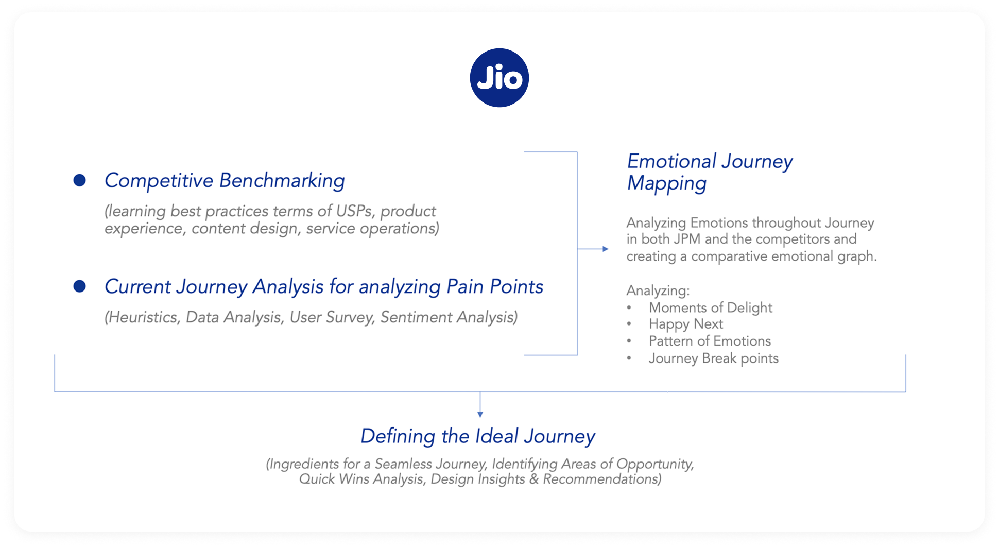
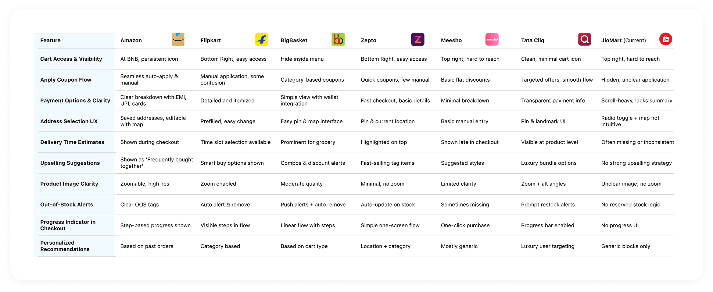
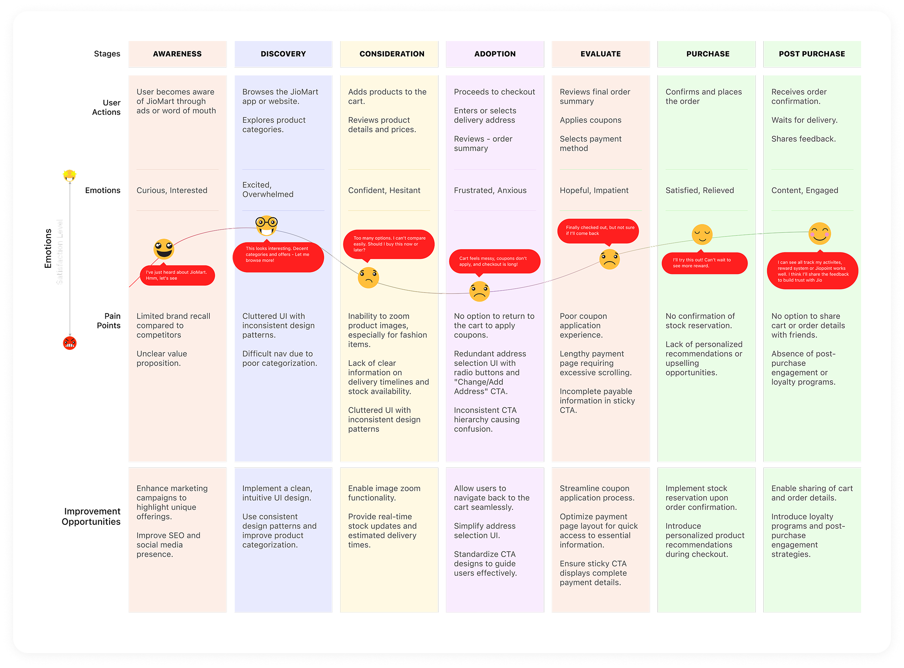
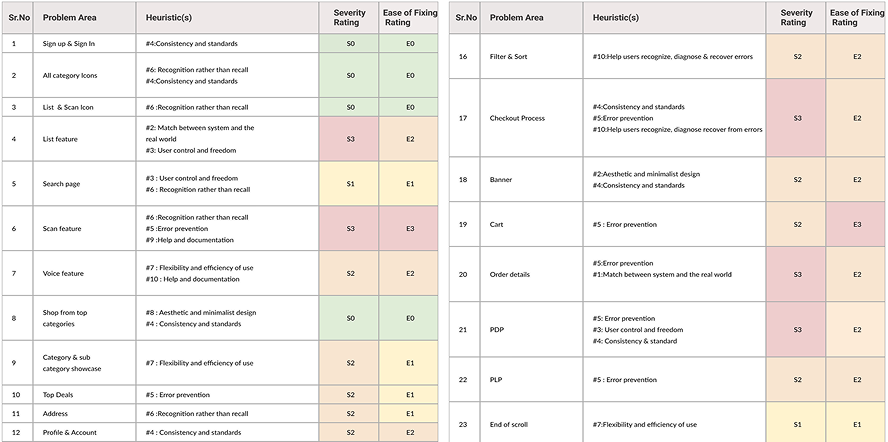
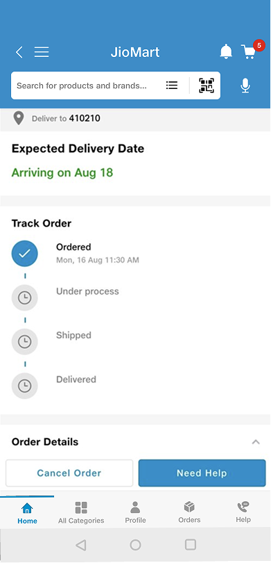

U
Unnamed shopper
★★★★★Checkout is so much faster now — the payable amount is right there and coupons apply automatically. Placing an order feels effortless. 5/5.
Play Store
Rebuilding JioMart's cart, address, payment, and confirmation into a faster, clearer, more rewarding flow — the one screen every customer touches, but nobody had optimized.
View presentation
How the checkout evolved — from the original app, to the first DS 2.0 release, to what's live today.


As part of Jio's central design team, my first assignment was the cart and checkout flow — used by every JioMart customer, rarely optimized.
Hidden actions, confusing coupon logic, a cluttered payment page, and cart friction meant high drop-offs and abandoned carts.
Focused CTAs, automatic best-coupon, color-coded pricing, live order tracking, a cleaner payment page, and a dedicated coupon store.
Ecommerce conversion up 20.54%, new users up 29%, returning users up 20.61%, and orders up 8.15%.
Shopping is a daily ritual, but the moment of purchase is where users either complete or abandon. JioMart was scaling fast, and the DS 2.0 rollout was the chance to reimagine the checkout — cart, address, payment, order review, and confirmation — for a flow every customer uses but that had never been truly optimized.
User interviews, heuristic evaluation, and emotional journey mapping revealed where the flow fell apart — across cart, payment, and the mindset of the shopper.
Buried in the top-right corner — hard to reach on mobile, with no clear way to clear or group items.
Grocery buyers couldn't see estimated delivery times at checkout — a key conversion factor.
Users couldn't easily find or apply coupons, leading to missed savings and visible friction.
Unnecessary fields, no reason given for the phone number, and missing delivery estimates hurt trust.
Excessive scrolling, a hidden payable amount, and inconsistent UI made the final step feel heavy.
No reward-like nudges or dopamine triggers — checkout felt like a chore, not a continuation of shopping.
Before touching a single screen, I benchmarked the best e-commerce flows, mapped the shopper's emotional journey, and audited the existing experience against usability heuristics — so every decision traced back to evidence.





Grounded in empathy, market sense, and system constraints — we fixed what was broken and upgraded what mattered, aligning everything to Jio's DS 2.0 and to how people actually decide.
A dedicated coupon & offer zone: browse all active coupons, shop category-specific offers, filter and apply directly without waiting for checkout, and see personalized suggestions.

Gave the primary CTA clear prominence, added a payment bifurcation nudge, made "Save for Later" a proper action, and surfaced product details (size, colour, seller). Automatic best-coupon and a colour-coded payment breakdown make savings obvious.

Simplified the map-based add/edit flow, removed dated grey patches, surfaced all key fields in the first viewport, and added drag-to-select location with auto-fill.

Cut scroll length, kept the payable amount and breakdown always visible, cleaned up spacing and icons, and surfaced all UPI, wallet, and bank methods upfront.

Clear savings callout on the placed order, ordered-item images with quick access to My Orders, a "Continue shopping" primary CTA, status-based colors, and a "Rate Your Experience" prompt.

The old tracking screen was just a static status list — no live location, no way to reach the delivery partner, no help, no feedback. That uncertainty was the biggest source of post-purchase anxiety. The redesign adds live map tracking with real-time ETA and delivery OTP, a one-tap call to the delivery partner, the items in the order, and quick access to help — connecting the order to real life, with room for feedback and upsell along the way.

Replaced generic FAQs with a centralized, action-oriented help hub — quick-access links, decluttered UI, visible chat/call/email CTAs, and a guided chatbot for faster resolution.


By fixing friction and adding moments of delight, the checkout stopped leaking users — and started compounding growth across sessions, orders, and revenue.
Real reviews from the Play Store & App Store after the redesign shipped.
Checkout is so much faster now — the payable amount is right there and coupons apply automatically. Placing an order feels effortless. 5/5.
Really good app. Best service experience and user experience.
Just fabulous. Ordering groceries and paying has never been this smooth.
Improved, and the new UI looks much better than earlier. Checkout feels quicker too.
Excellent shopping experience online.
Very good app experience. Clean layout and easy to check out.
Reviews as published on the App Store & Google Play. Rating distribution is indicative.